Mayoritariamente ganadera.
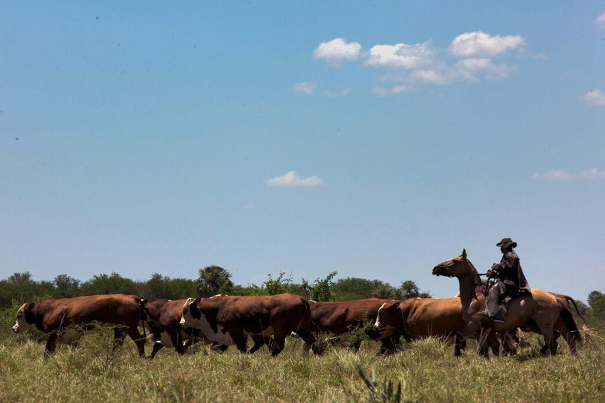
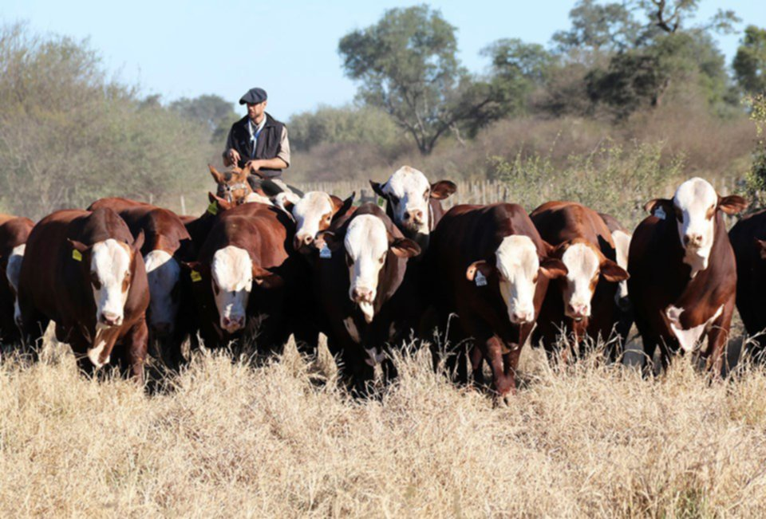
Con aprovechamiento forestal.
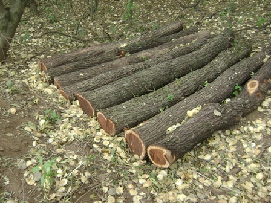
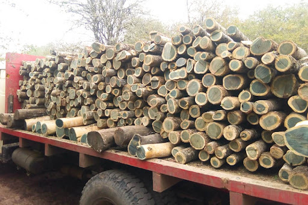
Desarrollo de actividades no tradicionales como la piscicultura.
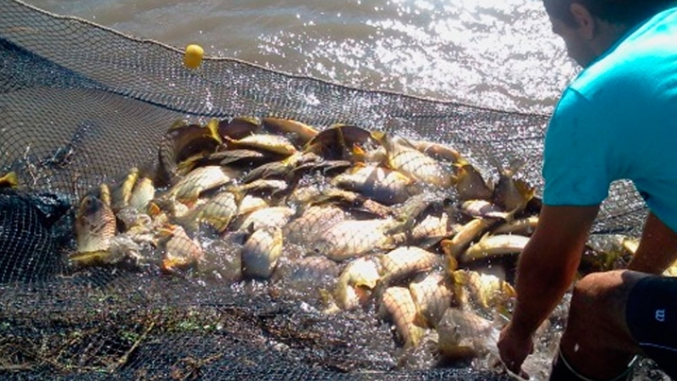
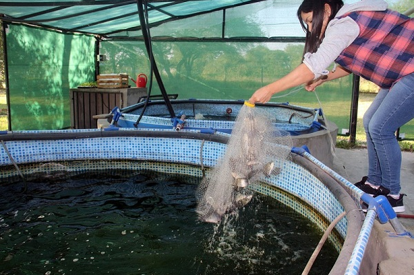
Agricultura de arroz, maíz, y oleaginosas.
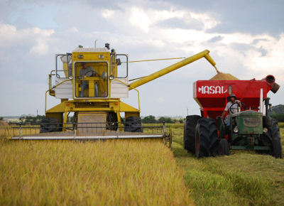
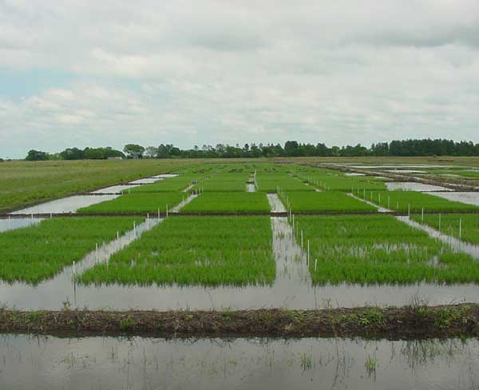
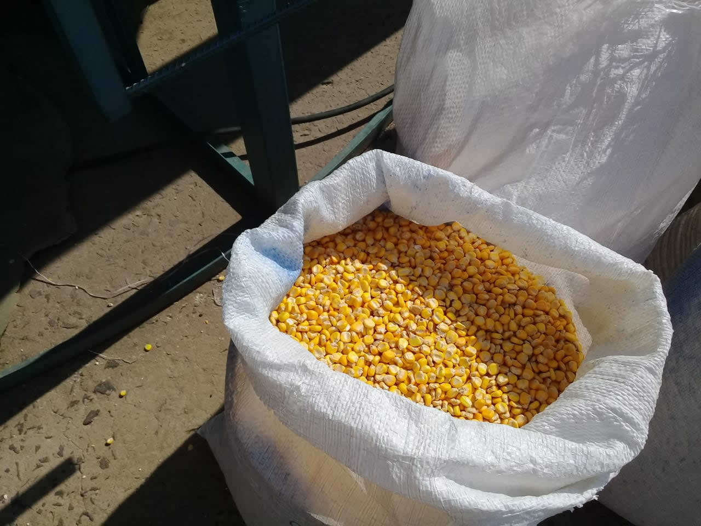
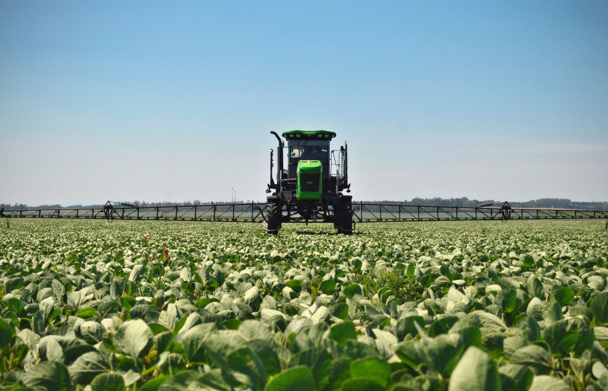
Servicios Transfronterizos.
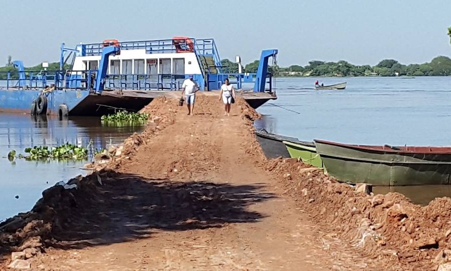
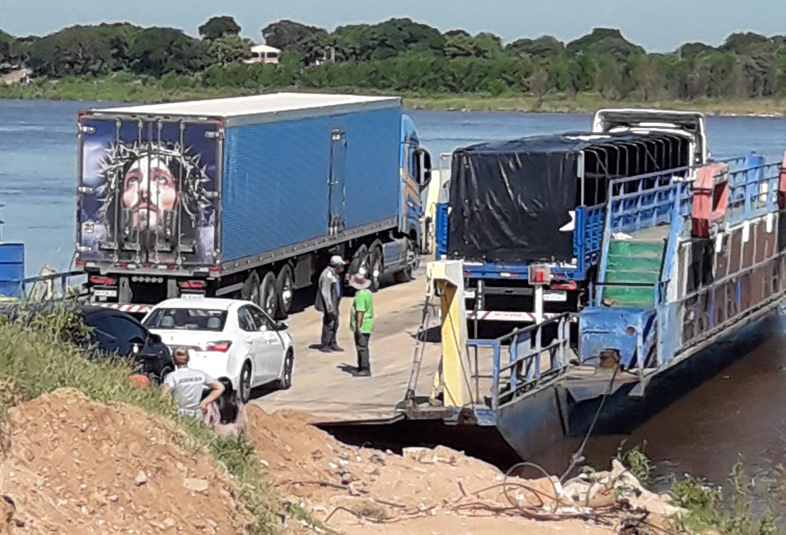
Plantas ornamentales.
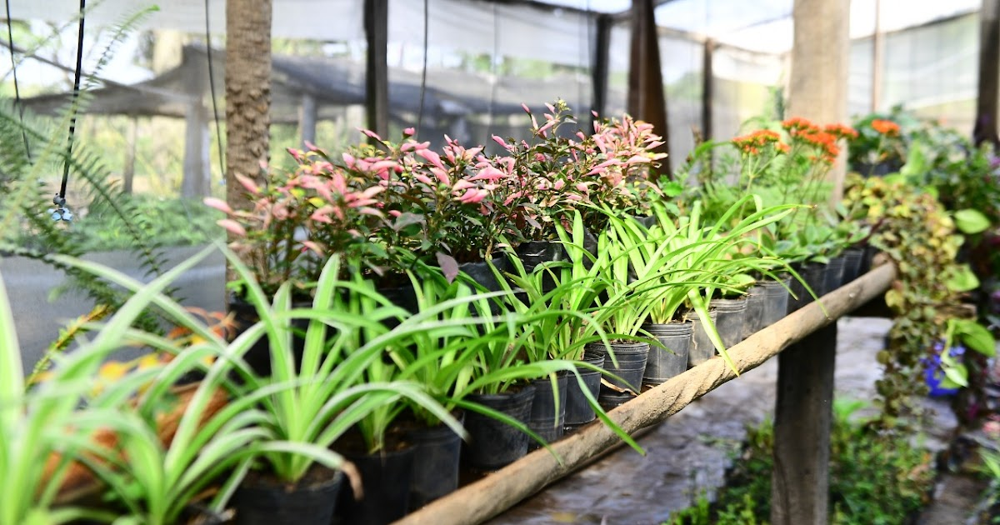
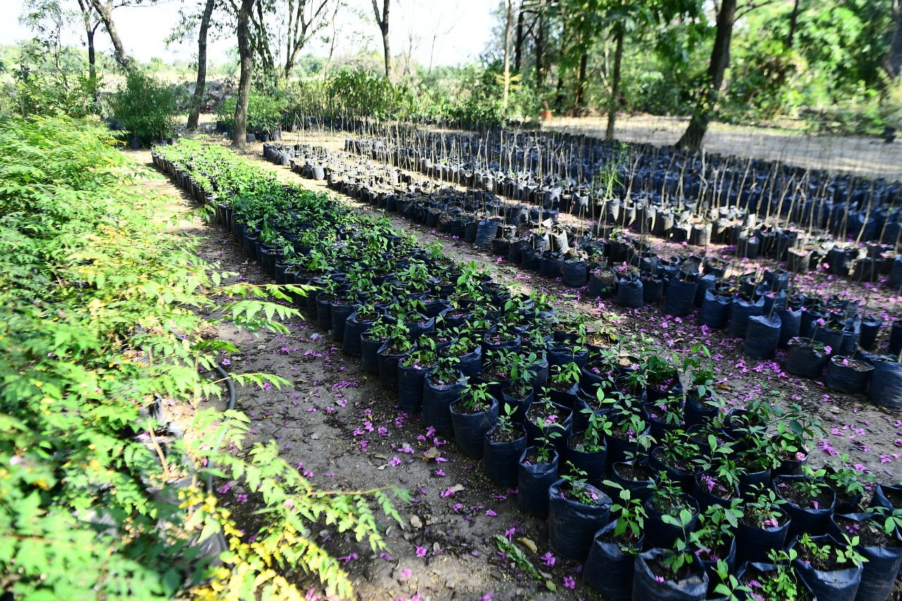
Industría frigorífica
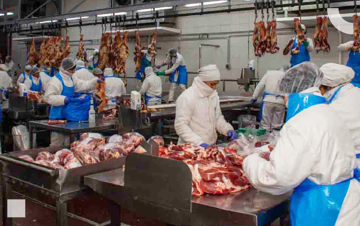
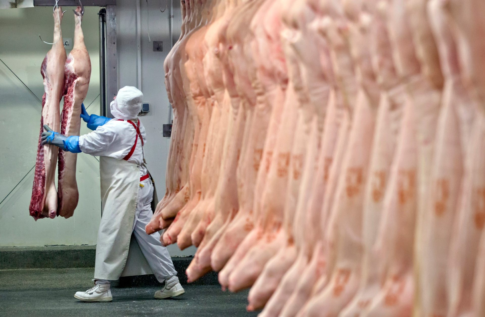